Interpretace grafu4 b
Ve všech variantách je graf demografické skutečnosti (např. věková pyramida ČR). Úkol: popsat zobrazený jev a v několika větách vysvětlit příčiny a důsledky. Níže je šablona + všechny grafy z přednášek s modelovou odpovědí.
Šablona odpovědi (5–7 vět):
- Co graf ukazuje – typ grafu, osy, jednotky, území a období („Věková pyramida ČR k 31. 12. 2024 – počet mužů a žen v jednotlivých letech věku.“)
- Popis tvaru – základna/vrchol, maxima a minima, nepravidelnosti, rozdíl mužů a žen, trend v čase (s čísly, kde je znáš).
- Příčiny – historické události (války, krize, populační politika), 2. demografická revoluce, zlepšování úmrtnosti, migrace.
- Důsledky – školství, trh práce, zdravotnictví, sociální služby, důchodový systém, bytová politika.
- 1 věta závěru (progresivní/regresivní populace, stárnutí, výhled).
Slovník příčin a důsledků (použij k jakémukoli grafu)
| Jev | Typické příčiny | Typické důsledky |
|---|---|---|
| Silné ročníky (konec 40. let; 70. léta „Husákovy děti“) | poválečný nárůst porodnosti po 2. sv. válce; propopulační opatření 70. let (novomanželské půjčky, mateřské příspěvky) | tlak na školy, později na trh práce a bydlení; ve stáří zátěž důchodového systému |
| Slabé ročníky (války, hospodářská krize 30. let, 90. léta) | krize, války, nejistota; po 1989 transformace, odkládání rodičovství, nové možnosti (vzdělání, kariéra), pokles plodnosti pod 1,3 | nedostatek žáků, později pracovní síly; „echo“ efekt – slabé ročníky mají málo dětí |
| Úzká základna (nízká porodnost) | úp pod 2,1 (v ČR ~1,2–1,3), odkládání rodičovství, antikoncepce, náklady, bydlení | relativní stárnutí, pokles počtu žáků/studentů, zavírání škol |
| Široký vrchol (více starých) | pokles úmrtnosti, zlepšení zdravotní péče a životního stylu, delší střední délka života | absolutní stárnutí, tlak na zdravotní a sociální péči, důchody, nedostatek pečovatelů |
| Převaha žen ve vysokém věku | mužská nadúmrtnost (životní styl, rizika, nemoci), delší naděje dožití žen o ~6 let | větší podíl osamělých starých žen, specifické potřeby sociálních služeb |
| Převaha chlapců v nízkém věku | při narození se rodí ~106 chlapců na 100 děvčat | vyrovnání do cca 45 let |
| Zlomy v časových řadách | legislativa (potratové zákony 1957, 1986), covid (2020–21), migrace (2022 uprchlíci z Ukrajiny) | nutnost opatrné interpretace časových řad |
Grafy ze slidů a modelová interpretace
Věková pyramida ČR (k 31. 12. 2024) – NEJPRAVDĚPODOBNĚJŠÍ GRAF
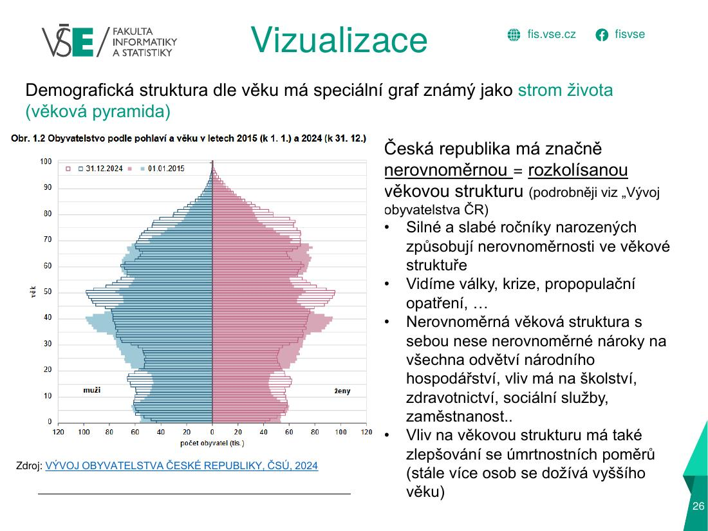
Modelová interpretace (popis · příčiny · důsledky)
Popis: pyramida ČR je nerovnoměrná (rozkolísaná). Nejsilnější ročníky jsou kolem 50 let (narození v 70. letech, „Husákovy děti“) a v nejmladších věcích úzká základna. Slabší ročníky jsou kolem 30 let (narození 90. let) a menší výběžek kolem 10–15 let (silnější ročníky z 2. dekády 21. století). Ve vyšších věcích převažují ženy (pravá strana), v mladších muži (levá strana).
Příčiny: propopulační opatření 70. let (silné ročníky), pokles porodnosti po 1989 (slabé ročníky), nízká plodnost; delší život žen než mužů (mužská nadúmrtnost), zlepšování úmrtnosti (stárnutí shora).
Důsledky: nerovnoměrné nároky na školství, zdravotnictví, sociální služby a zaměstnanost; v nejbližších letech vstoupí silné ročníky do důchodového věku (tlak na důchodový systém, nedostatek pracovních sil); populace stárne.
Příčiny: propopulační opatření 70. let (silné ročníky), pokles porodnosti po 1989 (slabé ročníky), nízká plodnost; delší život žen než mužů (mužská nadúmrtnost), zlepšování úmrtnosti (stárnutí shora).
Důsledky: nerovnoměrné nároky na školství, zdravotnictví, sociální služby a zaměstnanost; v nejbližších letech vstoupí silné ročníky do důchodového věku (tlak na důchodový systém, nedostatek pracovních sil); populace stárne.
Typy věkových struktur – Sundbarg (ČR 1900, 1950, 2003)
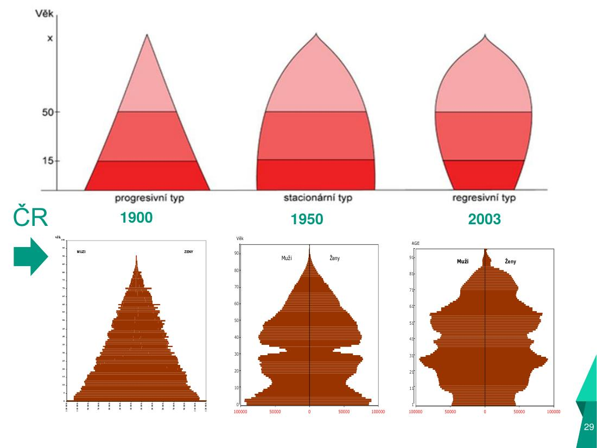
Modelová interpretace (popis · příčiny · důsledky)
Popis: 1900 = progresivní (pyramida, děti převažují nad prarodiči), 1950 = stacionární (zvon, děti ≈ prarodiče), 2003 = regresivní (urna, prarodiče převažují nad dětmi).
Příčiny: pokles porodnosti a úmrtnosti (demografický přechod), válečné události, zlepšování zdraví.
Důsledky: stárnutí populace, vyšší zatížení produktivní složky, tlak na penze a zdravotnictví.
Příčiny: pokles porodnosti a úmrtnosti (demografický přechod), válečné události, zlepšování zdraví.
Důsledky: stárnutí populace, vyšší zatížení produktivní složky, tlak na penze a zdravotnictví.
Progresivní vs. regresivní struktura – Romové vs. celá populace (ČR 1991)
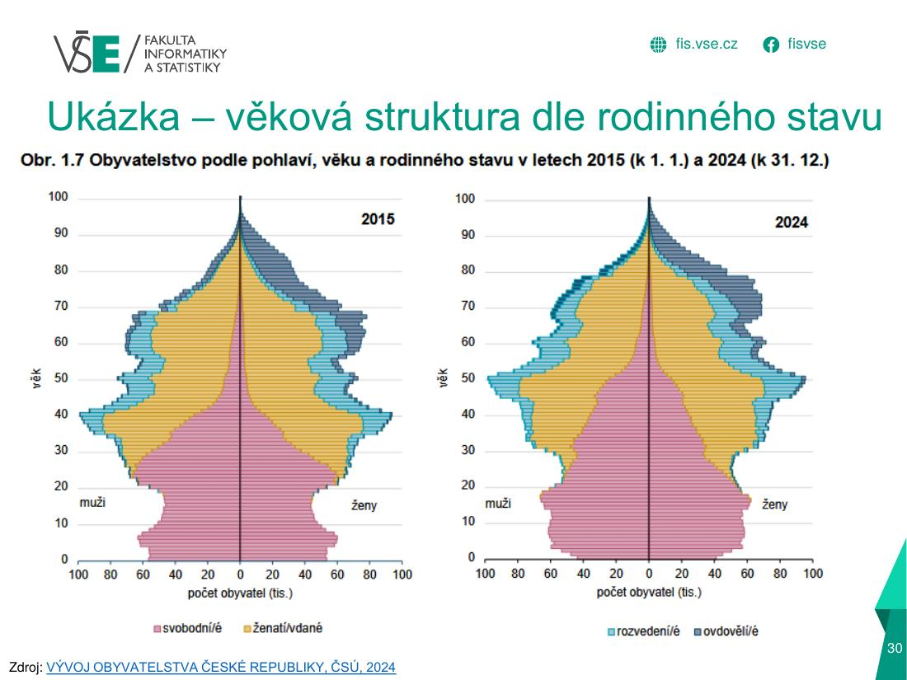
Modelová interpretace (popis · příčiny · důsledky)
Popis: pyramida celé populace ČR je regresivní (užší základna), populace Romů progresivní (široká základna, úzký vrchol). Podíl dětí je u Romů mnohem vyšší.
Příčiny: vyšší porodnost a vyšší úmrtnost (nižší naděje dožití) romské populace.
Důsledky: odlišné potřeby (školství, bydlení, sociální služby); ukazuje, že věková struktura závisí i na etniku/diferenci.
Příčiny: vyšší porodnost a vyšší úmrtnost (nižší naděje dožití) romské populace.
Důsledky: odlišné potřeby (školství, bydlení, sociální služby); ukazuje, že věková struktura závisí i na etniku/diferenci.
Struktura přírůstku obyvatel ČR 1950–2019 (celkový, přirozený, saldo migrace)
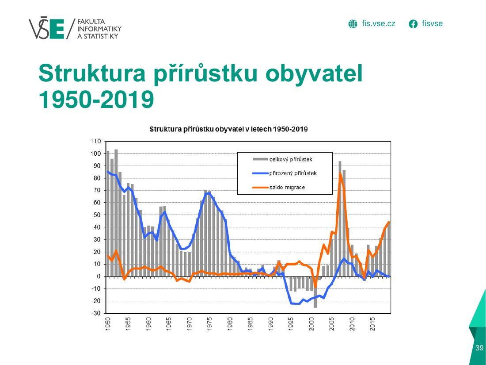
Modelová interpretace (popis · příčiny · důsledky)
Popis: v 50.–70. letech byl přirozený přírůstek kladný (vrchol 1974–75), v 90. letech klesá až do záporných hodnot, poté mírný růst po 2000; saldo migrace kolísá (výrazný záporný pík 1968–69 emigrace, kladné od 90. let, vrchol 2007–2008 a 2022).
Příčiny: propopulační politika 70. let, pokles porodnosti po 1989, imigrace po vstupu do EU.
Důsledky: růst populace v posledních letech je tažen migrací, nikoli přirozenou měnou.
Příčiny: propopulační politika 70. let, pokles porodnosti po 1989, imigrace po vstupu do EU.
Důsledky: růst populace v posledních letech je tažen migrací, nikoli přirozenou měnou.
Přírůstek obyvatelstva ČR 2015–2024
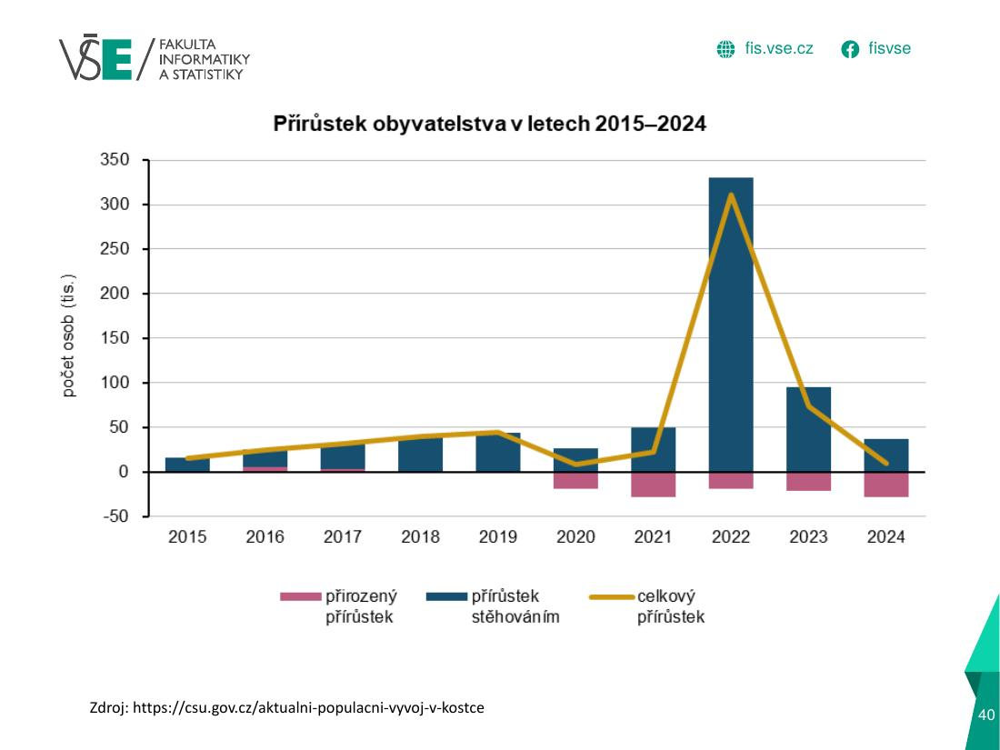
Modelová interpretace (popis · příčiny · důsledky)
Popis: přirozený přírůstek je od 2020 záporný (úmrtí převyšují narození), přírůstek stěhováním je kladný, v roce 2022 prudce vyskočil (~330 tis.).
Příčiny: covid (nadúmrtnost 2020–2021), nízká porodnost, příchod uprchlíků z Ukrajiny (2022).
Důsledky: počet obyvatel roste jen díky imigraci; vliv na trh práce, školy, zdravotnictví.
Příčiny: covid (nadúmrtnost 2020–2021), nízká porodnost, příchod uprchlíků z Ukrajiny (2022).
Důsledky: počet obyvatel roste jen díky imigraci; vliv na trh práce, školy, zdravotnictví.
Charakteristiky věkového složení ČR 2015–2024 (index stáří, závislost, průměrný věk, medián)
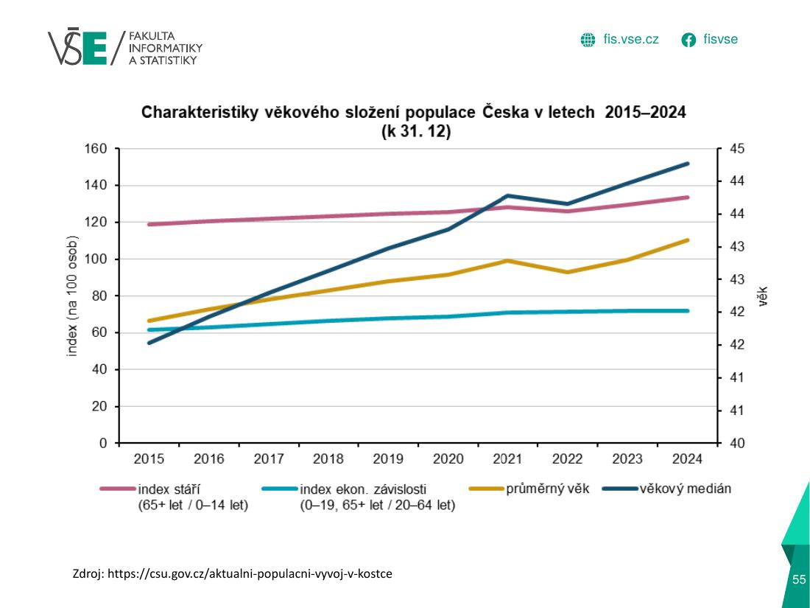
Modelová interpretace (popis · příčiny · důsledky)
Popis: všechny ukazatele rostou: index stáří (65+/0–14) z ~118 na ~133, průměrný věk ze ~42 na ~43,5 let, věkový medián prudčeji (~44 → 45 let); index ekonomické závislosti roste pomaleji.
Příčiny: nízká plodnost a rostoucí naděje dožití, silné ročníky 70. let stárnou.
Důsledky: stárnutí populace, rostoucí zátěž důchodového systému a péče.
Příčiny: nízká plodnost a rostoucí naděje dožití, silné ročníky 70. let stárnou.
Důsledky: stárnutí populace, rostoucí zátěž důchodového systému a péče.
Specifické míry plodnosti v ČR 2025
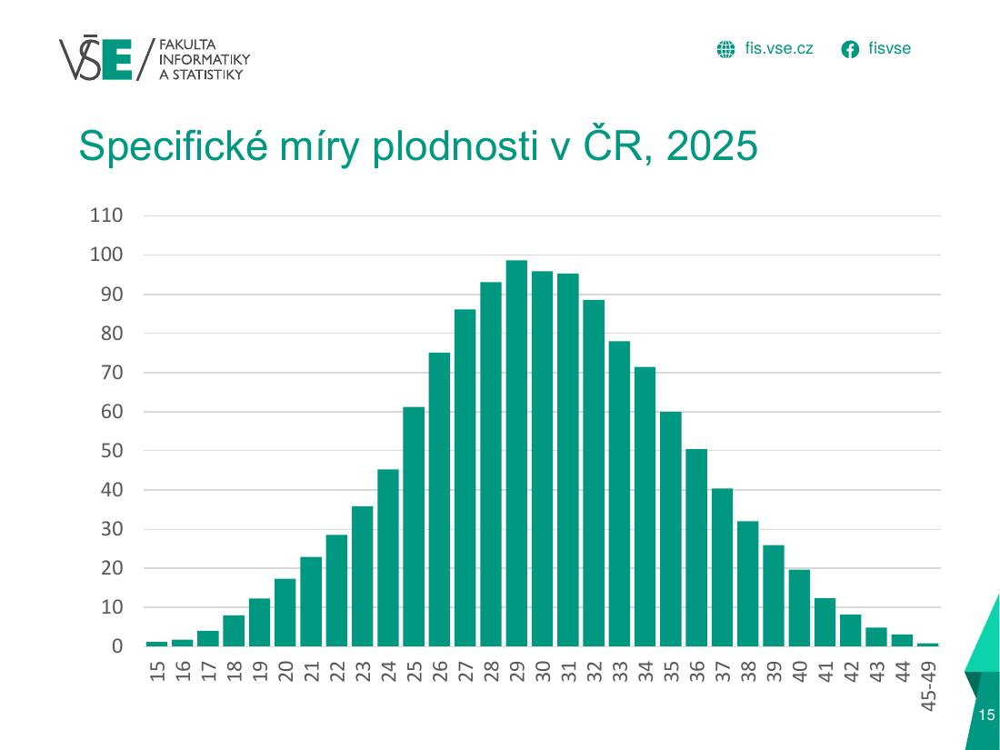
Modelová interpretace (popis · příčiny · důsledky)
Popis: plodnost je nejvyšší kolem 28–31 let (~100 narozených na 1000 žen), pod 20 let a nad 40 let nízká. Křivka je jednovrcholová, mírně pravostranně šikmá.
Příčiny: biologie (fekundita klesá s věkem) + společenské faktory: delší studium, odkládání rodičovství, work-life balance.
Důsledky: průměrný věk matek roste (~30+ let), nižší počet dětí na ženu.
Příčiny: biologie (fekundita klesá s věkem) + společenské faktory: delší studium, odkládání rodičovství, work-life balance.
Důsledky: průměrný věk matek roste (~30+ let), nižší počet dětí na ženu.
Věkově specifické míry plodnosti v ČR – srovnání 1950, 1975, 1999, 2008, 2024
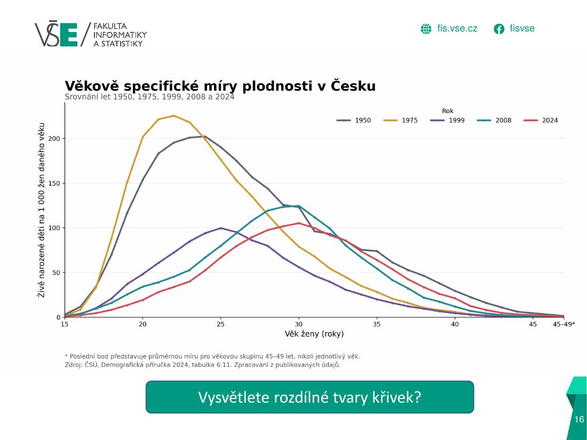
Modelová interpretace (popis · příčiny · důsledky)
Popis: v 1950 a hlavně 1975 byl vrchol vysoký (~200–225 ‰) a posunutý do nízkého věku (22–25 let); v 1999 je křivka plochá (~100), 2008 mírně vyšší a posunutá doprava; 2024 má vrchol kolem 30–31 let a nízkou úroveň.
Příčiny: propopulační politika v 70. letech (mladé matky), transformace po 1989 – odkládání rodičovství do vyššího věku, vzdělání, kariéra.
Důsledky: posun plodnosti do vyššího věku, nižší úhrnná plodnost.
Příčiny: propopulační politika v 70. letech (mladé matky), transformace po 1989 – odkládání rodičovství do vyššího věku, vzdělání, kariéra.
Důsledky: posun plodnosti do vyššího věku, nižší úhrnná plodnost.
Vývoj úhrnné plodnosti ČR 1920–2025

Modelová interpretace (popis · příčiny · důsledky)
Popis: úp klesá z ~3,0 (1920) na ~1,7 (30. léta); vrchol ~3,2 po válce (1945–47); pokles v 60. letech (~1,7), druhý vrchol v polovině 70. let (~2,4), pak pokles na historické minimum ~1,13 (kolem 1999–2000); mírný růst do 2021 (~1,8), poté prudký pokles (~1,3 v 2025).
Příčiny: válka a krize, poválečný baby boom, legalizace UPT (1957), propopulační opatření 70. let, transformace 90. let, odkládání mateřství, od 2022 inflace, nejistota, drahé bydlení.
Důsledky: úp pod 2,1 → bez migrace by populace dlouhodobě ubývala; relativní stárnutí.
Příčiny: válka a krize, poválečný baby boom, legalizace UPT (1957), propopulační opatření 70. let, transformace 90. let, odkládání mateřství, od 2022 inflace, nejistota, drahé bydlení.
Důsledky: úp pod 2,1 → bez migrace by populace dlouhodobě ubývala; relativní stárnutí.
Úhrnná plodnost a průměrný věk matek 1950–2025
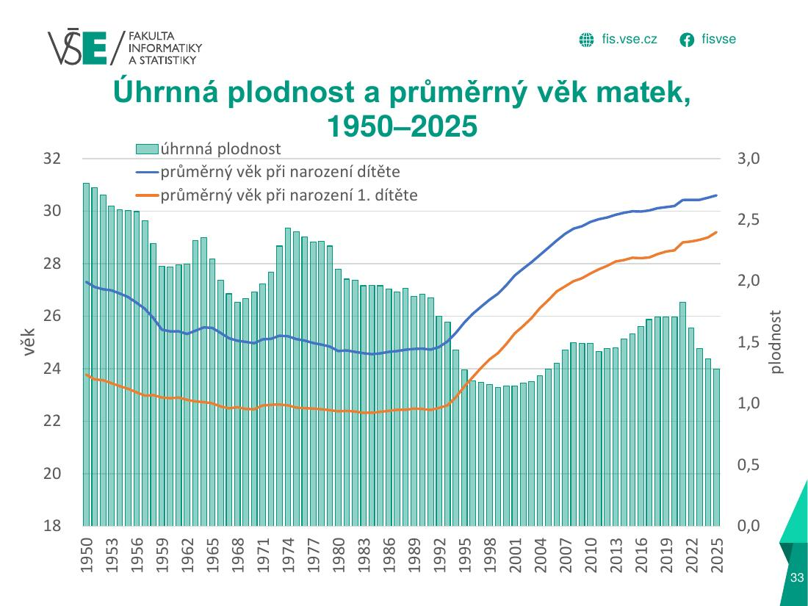
Modelová interpretace (popis · příčiny · důsledky)
Popis: úhrnná plodnost (sloupce) klesá do konce 90. let na minimum, pak roste, po 2021 znovu klesá. Průměrný věk při narození dítěte (modrá) a 1. dítěte (oranžová) rostl od 90. let (~24 → ~30,5 / ~28,5).
Příčiny: odkládání rodičovství (vzdělání, kariéra, bydlení).
Důsledky: později narozené děti, nižší konečná plodnost, rostoucí podíl asistované reprodukce.
Příčiny: odkládání rodičovství (vzdělání, kariéra, bydlení).
Důsledky: později narozené děti, nižší konečná plodnost, rostoucí podíl asistované reprodukce.
Kojenecká úmrtnost v ČR 1950–2025
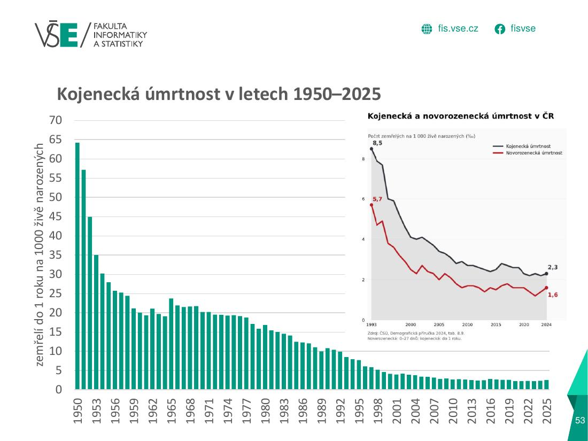
Modelová interpretace (popis · příčiny · důsledky)
Popis: pokles z ~64 ‰ (1950) na ~2–3 ‰ (dnes) – ČR patří k nejnižším na světě.
Příčiny: zlepšení zdravotní péče (porodnice, očkování, perinatologie), hygiena, životní úroveň.
Důsledky: nárůst střední délky života, vymizení „paradoxu“ e1 > e0.
Příčiny: zlepšení zdravotní péče (porodnice, očkování, perinatologie), hygiena, životní úroveň.
Důsledky: nárůst střední délky života, vymizení „paradoxu“ e1 > e0.
Vývoj naděje dožití při narození v ČR 1920–2025 (muži, ženy)
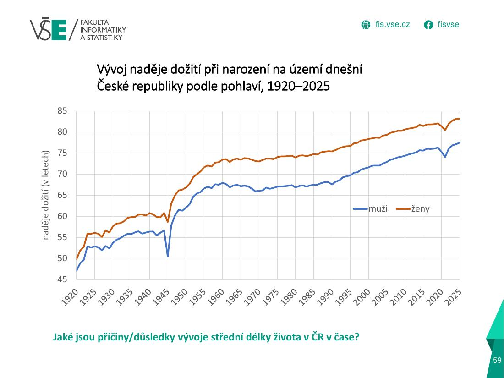
Modelová interpretace (popis · příčiny · důsledky)
Popis: dlouhodobý růst (muži ~47 → ~77,5; ženy ~50 → ~83); propad v 1945 (válka), stagnace mužů v 60.–80. letech (~66–67), rychlý růst po 1990, krátký propad 2020–2021 (covid); ženy o ~6 let výš.
Příčiny: pokles kojenecké a obecně úmrtnosti, lepší zdravotní péče; stagnace 70.–80. let: životní styl, špatné životní prostředí, vyšší úmrtnost na kardiovaskulární choroby; po 1990 zlepšení péče a životního stylu; mužská nadúmrtnost.
Důsledky: stárnutí populace, delší pobyt v důchodu, potřeba úprav důchodového systému.
Příčiny: pokles kojenecké a obecně úmrtnosti, lepší zdravotní péče; stagnace 70.–80. let: životní styl, špatné životní prostředí, vyšší úmrtnost na kardiovaskulární choroby; po 1990 zlepšení péče a životního stylu; mužská nadúmrtnost.
Důsledky: stárnutí populace, delší pobyt v důchodu, potřeba úprav důchodového systému.